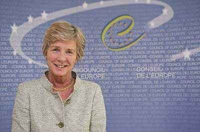

14/04/11 Forthcoming European Conference and Europe Day with the participation of the Deputy Secretary General of the Council of Europe

The European Conference, for which registration is now open, will take place on the afternoons of 3 and 4 May at the Institución Fernando el Católico (Provincial Council of Zaragoza), Plaza de España, 2.Europe Day will be celebrated the following day at the headquarters of Ibercaja (San Ignacio de Loyola, 16), with an address by Maud de Boer-Buquicchio, Deputy Secretary General of the Council of Europe, on the 25th anniversary of the Real Instituto de Estudios Europeos; she will receive the Institute's Gold Insignia and Medal.
More information at: www.riee.eu/dese_informacion.html (in Spanish)
Photograph: Council of Europe